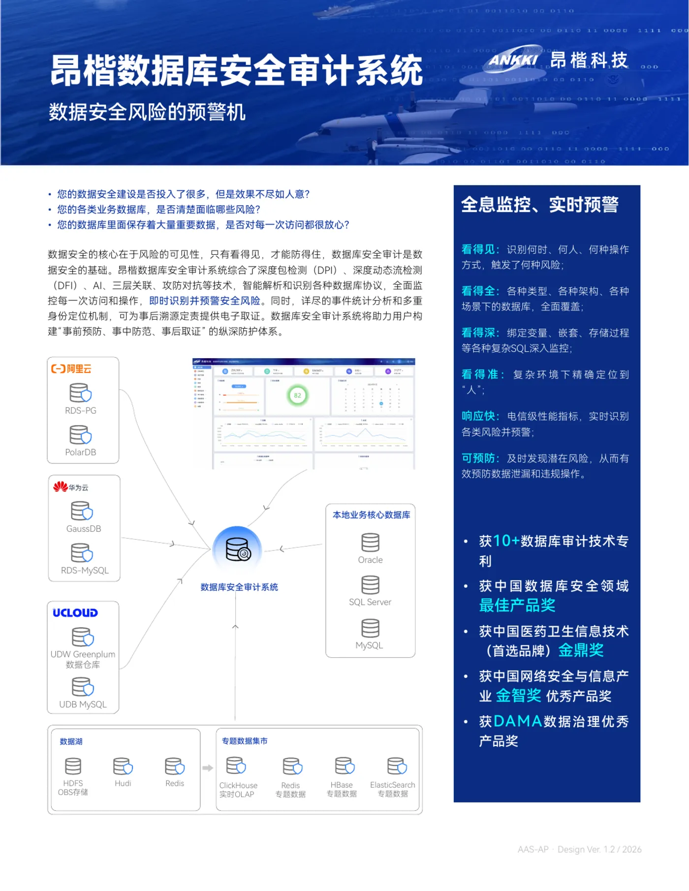

市场背景
数据安全赛道竞争激烈，展会是核心销售场景。行业内大量产品单页存在信息过载、视觉陈旧和缺乏记忆点的问题。
Case Study · 昂楷科技 · 2025
不只是设计执行——从制度建立、团队组建，到视觉落地，一个由设计师发起并主导的组织级项目。
产品单页
覆盖全产品线
跨部门参与成员
销售 · 技术服务 · 研发 · 设计
正反双面版面
逐款独立设计
钉钉 / 电子书架 / 展会
同步发布
01 — 问题重构
我把任务从“美化十三张单页”，重新定义为“建立一套让客户先看懂、再愿意深读的视觉营销语言”。
数据安全赛道竞争激烈，展会是核心销售场景。行业内大量产品单页存在信息过载、视觉陈旧和缺乏记忆点的问题。
昂楷科技拥有 13 款核心产品，覆盖数据库审计、脱敏、分类分级等产品线，原有物料已无法支撑展会与销售拜访需求。
我在展会现场收集竞品单页，从信息层级、文案密度、视觉表达和取阅路径四个维度逐项比对，为设计决策建立依据。

After · 统一视觉营销语言产品概述 功能特点 系统架构 应用场景 技术参数 部署说明
10 秒先用主张与图像建立理解
1 分钟再用层级和色彩定位重点
深读背面保留专业参数与证据
非技术访客一眼理解产品价值，愿意走近展位继续交流。
专业客户翻到背面后，仍能获得足够完整的功能、架构与技术信息。
02 — 制度先行
我先把角色、时限、评审与发布路径写进正式文件，再让视觉生产进入一套可追踪的组织流程。
Operating model
证据中的姓名、会议号、内部链接与负责人信息已脱敏；流程结构与关键节点保持原貌。
把版面翻译成 PPT产品经理在熟悉的工具中填写，不需要进入设计软件。
字号就是约束每个区块限定字数和信息类型，从输入端消除排版返工。
03 — 视觉系统
版式结构、信息层级与图像逻辑保持统一；主色、代号和价值主张成为每款产品的身份变量。
13 product identities
价值主张先行。用一句有画面的比喻、一张主视觉和三个核心卖点，替代第一眼的参数堆叠。
专业性没有被删掉。它只是被放回正确的阅读顺序，让扫读与深读不再争夺同一块版面。
04 — 全线落地
从制度发布、集中评审到全员邮件和展会现场，项目完成了从设计语言到真实业务触点的闭环。
任命评审小组，明确角色、时限与审批路径。
把版面等比例翻译为 PPT，输入从源头受控。
书面纪要逐条记录修改意见、责任人与状态。
DING、全员群、邮件与电子书架同时上线。
成为展会陈列、客户取阅与销售拜访的核心物料。
Complete delivery / 13 products
点选任意单页，从展位取出并查看完整正反面 ↗
Reflection / 项目反思
设计师不该只在最后接收需求。从定位框架和文案策略开始介入，理解业务与销售现场，最终交付的才是能帮助客户理解产品的营销工具。
B 端产品不应该用 B 端的方式设计。当所有竞品都在堆功能参数的时候，一个清晰的比喻、一张好看的插画、一套有逻辑的信息架构，反而是最大的差异化优势。
这不是一次单页改版，而是一个从零到一建立数据安全产品视觉营销体系的项目。Meridian 从展会调研与一线使用场景出发，重新定义任务：让 13 款高度专业的产品在销售拜访和展会现场被快速理解，同时建立一套可以持续协作、评审和发布的生产机制。
第一重难点是理解并转译专业知识。数据库审计、数据脱敏、分类分级等产品涉及复杂架构图、技术术语和应用逻辑；设计师必须先读懂产品，再把技术语言重组为清晰的信息层级、价值主张与视觉比喻，让专业用户认可，也让非专业客户能够迅速抓住重点。
第二重难点是组织跨部门协作。项目约 20 人参与，覆盖产品、销售与市场等部门。Meridian 推动成立跨部门评审小组，用正式制度明确角色、时限与审批路径，并把版面约束翻译为 PPT 区块模板，让文案撰写、集中评审、修改确认和发布形成闭环。设计不再闭门完成，而是在销售使用、市场展示与客户理解之间反复校准。
最终，13 款产品、26 个正反版面全部落地，以一套骨架和 13 种主色建立统一而可辨识的产品语言，并通过全员群、邮件和电子书架同步发布，成为公司展会陈列与销售拜访的核心物料；AI 介入后，插画周期也从 7–14 天缩短到 1–2 天。
问问 AI 关于 Meridian